Bizning klinik yoʻnalishlarimiz
Markaziy va periferik asab tizimi kasalliklarini diagnostika qilish va davolash.
Muhim tibbiy eslatma
Iltimos, eʼtibor bering: aniq tashxis va koʻrsatmalar har doim chuqur tekshiruvdan soʻng shifokor tomonidan individual belgilanadi. Biz aniq kafolatlangan natijani vaʼda qilmaymiz.
Umurtqa pogʻonasi
Umurtqa pogʻonasi kasalliklari
Umurtqa pogʻonasi orqa miya va nervlarni himoya qiladi hamda barqarorlik va harakatchanlikni taʼminlaydi. Eskirish, disk oʻzgarishlari, torayishlar yoki nobarqarorlik kuchli ogʻriq va nevrologik buzilishlarga olib kelishi mumkin.
Biz umurtqa pogʻonasining boʻyin (HWS), koʻkrak (BWS) va bel (LWS) sohalari hamda dumgʻaza-yonbosh boʻgʻimi (ISG) kasalliklarini tekshiramiz va davolaymiz. Asosiy maqsad — anatomik oʻzgarishlarning bemor shikoyatlariga mos kelishini aniqlashdir.
Disk churrasi (boʻyin / bel)
Nerv ildizlari yoki orqa miyani siqib qoʻyuvchi disk boʻrtishi yoki yorilishi. Boʻyin yoki bel umurtqa sohalarini zararlashi mumkin.
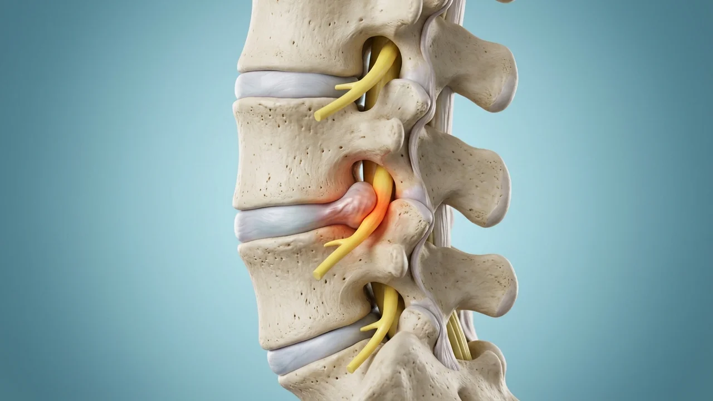
Spinal kanal stenozi
Spinal kanalning torayishi orqa miya va nervlarga bosim oʻtkazadi. Odatiy belgisi — yurish paytida paydo boʻlib, oʻtirganda yengillashuvchi ogʻriq.
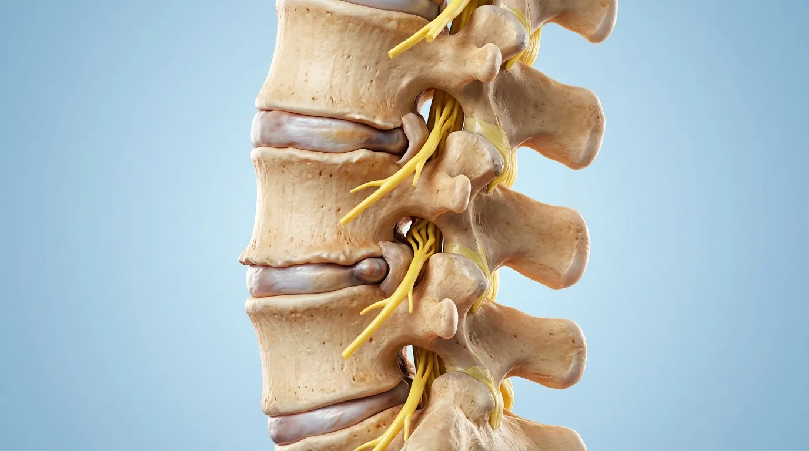
Faset boʻgʻimlari
Kichik umurtqalararo boʻgʻimlar artrozi va kistalari. Harakatda kuchayuvchi bel yoki boʻyindagi mahalliy ogʻriqlarni keltirib chiqaradi.

Boʻyin umurtqasi va disk protezi
Boʻyin umurtqasidagi oʻzgarishlar nerv ildizlari va orqa miyaga taʼsir qilishi mumkin. Tashxisga koʻra: dekompressiya, spondilodez yoki disk protezi.
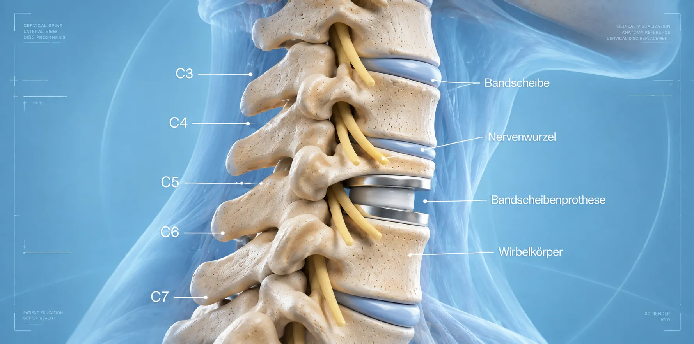
Dumgʻaza-yonbosh (ISG) sindromi
Dumgʻaza-yonbosh boʻgʻimining yalligʻlanishi yoki disfunksiyasi. Belning pastki qismi va tos sohasida dumba yoki songa tarqaluvchi ogʻriqlar xosdir.
.webp)
Umurtqa sinishlari va oʻsma asoratlari
Yiqilish, osteoporoz yoki oʻsma asorati natijasida umurtqa tanasi sinishi. Sabab va barqarorlikka qarab kifoplastika yoki koʻp tarmoqli terapiya.
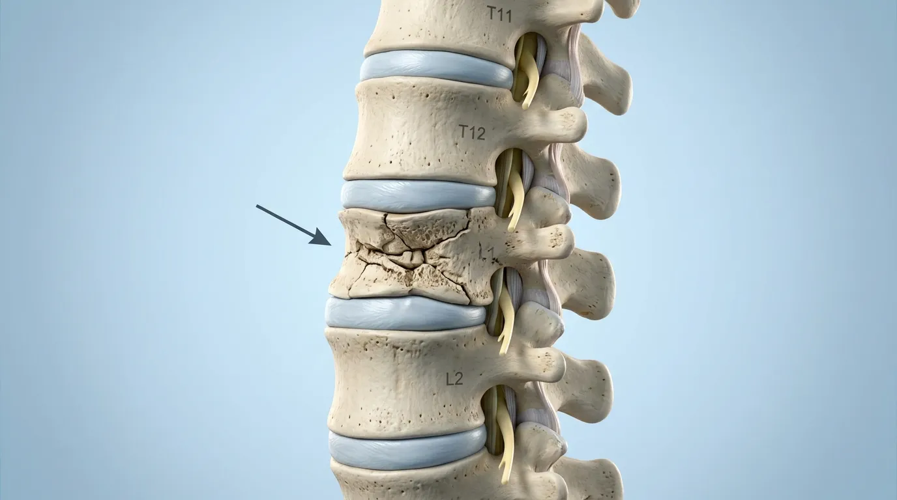
Periferik nervlar
Bosh va orqa miyadan tashqaridagi nerv kasalliklari
Periferik nervlar anatomik tor sohalarda qisilishga uchrashi mumkin. Odatiy belgilar — sanchiq, uvishish, ogʻriq va uzoq davom etganda mushaklar kuchining pasayishi.
Karpal tunnel sindromi
Bilak sohasida oʻrta nervning qisilishi. Bosh, koʻrsatkich va oʻrta barmoqlarda sanchiq, uvishish va holsizlik chaqiradi — koʻpincha kechalari kuchayadi.
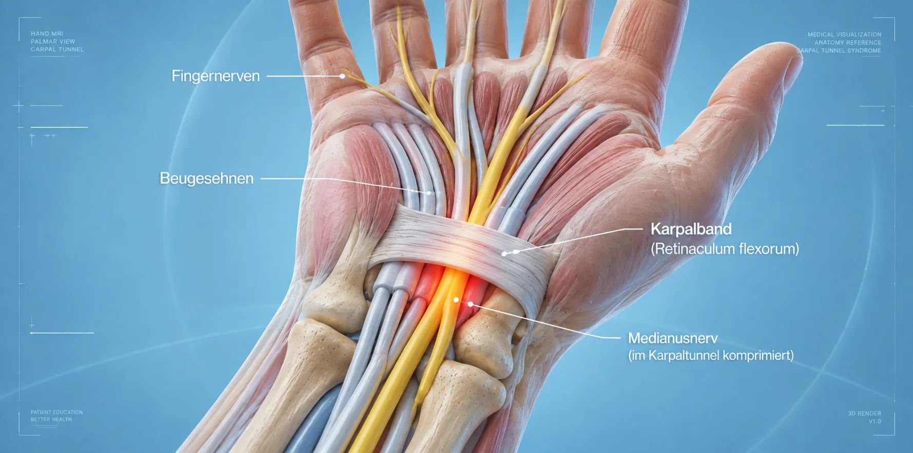
Kubital kanal sindromi
Tirsak sohasida tirsak nervining qisilishi. Jimjiloq va nomsiz barmoqda sanchiq va uvishish, tirsakda ogʻriq — uzoq davom etganda qoʻl panjasi kuchi pasayishi.
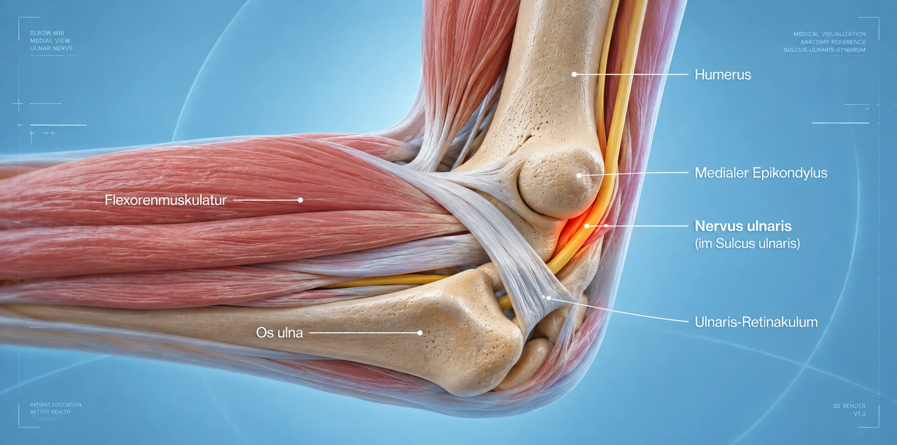
Nerv siqilishi sindromlari
Tananing turli anatomik tor joylaridagi tunnel sindromlari. Sanchiq, uvishish, ogʻriq va uzoq davom etganda mushak holsizligi bilan kechuvchi asab qisilishi.
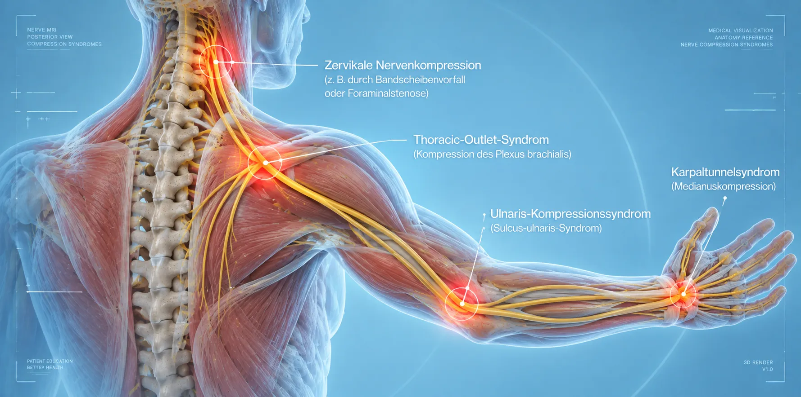
Tarsal kanal sindromi
Ichki toʻpiq sohasida tarsal kanalda katta boldir nervining qisilishi. Oyoq tagida va barmoqlarda sanchiq, uvishish va ogʻriqlar bilan namoyon boʻladi.
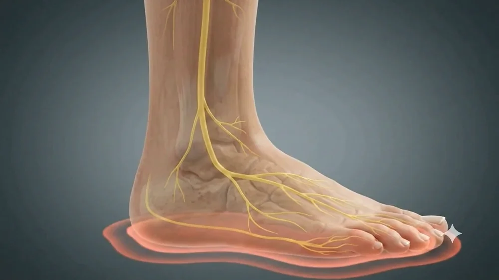
Nerv shikastlanishlari
Periferik asablarning jarohat yoki operatsiyadan keyingi shikastlanishlari. Darajasiga qarab: konservativ davo, asabni tiklash yoki funksiyani qaytaruvchi plastik operatsiya.
Polineyropatiyalar
Bir vaqtning oʻzida bir nechta periferik nervlarning zararlanishi (qandli diabet yoki boshqa kasalliklarda). Belgilari: sanchiq, uvishish, holsizlik — koʻpincha oyoq panjasidan boshlanadi.
Ogʻriq sindromlari
Surunkali va oʻtkir ogʻriq holatlari
Surunkali ogʻriq turli sabablarga koʻra yuzaga keladi. Shuning uchun bosqichma-bosqich multimodal davolash konsepsiyasi maqsadga muvofiqdir.
Surunkali bel/boʻyin ogʻrigʻi
Bir necha oy davom etuvchi toʻxtovsiz ogʻriq. Individual multimodal davolash yondashuvini talab qiladi.

Neyromodulyatsiya (SCS)
Surunkali ogʻriqni barqaror yengillashtirish uchun asab yoʻllarini elektr stimulyatsiya qiluvchi innovatsion minimal invaziv usullar.
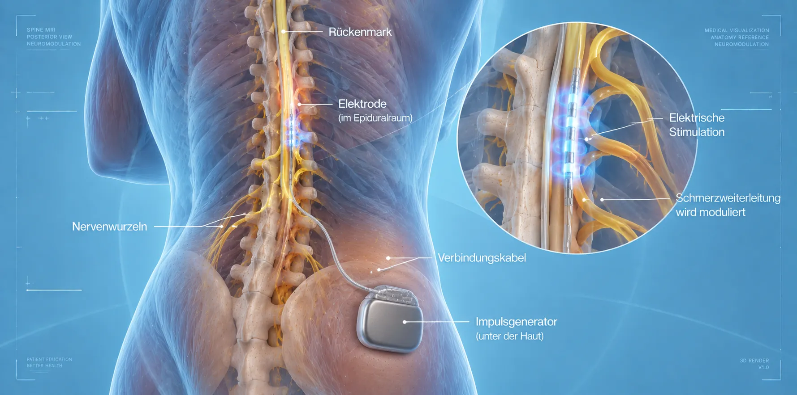
Neyropatik ogʻriq va operatsiyadan keyingi ogʻriqlar
Asab shikastlanishi yoki operatsiyadan keyingi ogʻriq. Achishish, sanchish, uvishish yoki terining oʻta sezgirligi xos alomatlardir.
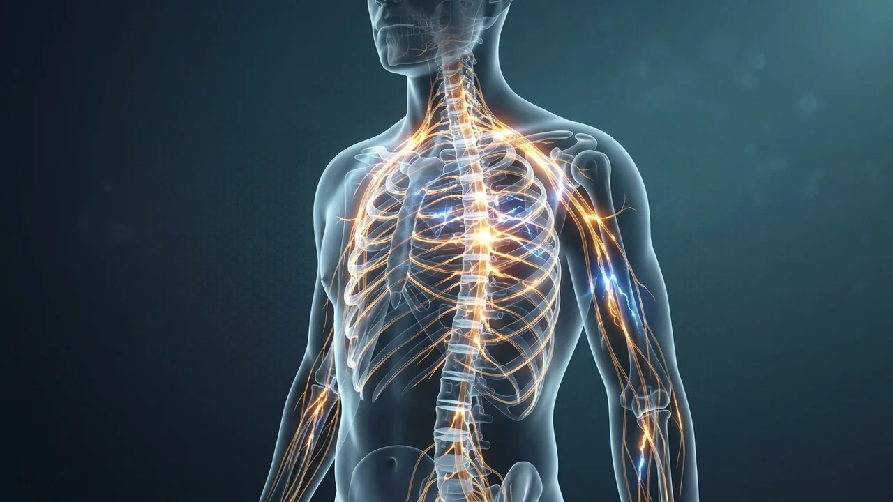
Psixosomatik hamroh omillar
Surunkali ogʻriqlarga koʻpincha ruhiy tushkunlik hamrohlik qiladi. Psixosomatik jihatlarni inobatga olgan kompleks yondashuv davolash natijalarini yaxshilaydi.
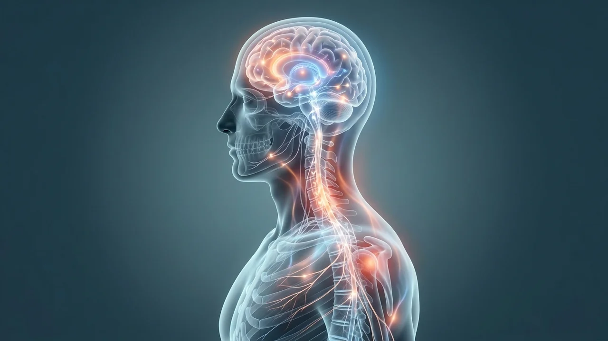
Ixtisoslashgan neyroxirurgik ogʻriq terapiyasi
Asab tizimi, umurtqa pogʻonasi va tayanch-harakat apparatining murakkab va surunkali ogʻriqlarini individual va multimodal davolash.
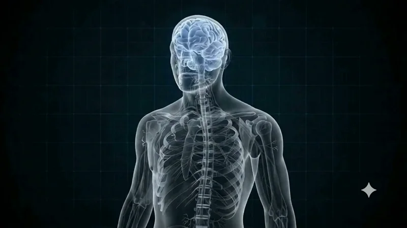